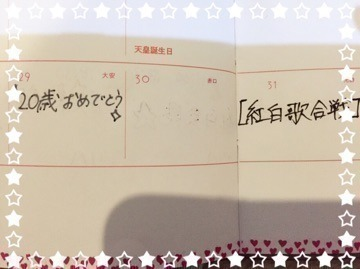
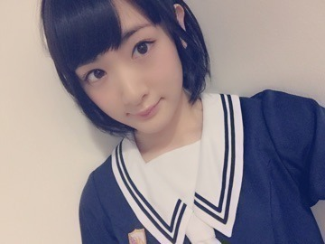

乃木坂46
第66回紅白歌合戦に
初出場いたします〜ヽ(・∀・)ノヽ(・∀・)ノヽ(・∀・)ノヽ(・∀・)ノヽ(・∀・)ノヽ(・∀・)ノヽ(・∀・)ノヽ(・∀・)ノヽ(・∀・)ノヽ(・∀・)ノヽ(・∀・)ノヽ(・∀・)ノヽ(・∀・)ノヽ(・∀・)ノヽ(・∀・)ノヽ(・∀・)ノヽ(・∀・)ノヽ(・∀・)ノヽ(・∀・)ノヽ(・∀・)ノヽ(・∀・)ノ
あわわあわわわ
こりゃ大変だ〜
祭りだ祭りだ〜〜ヽ(・∀・)ノヽ(・∀・)ノヽ(・∀・)ノヽ(・∀・)ノヽ(・∀・)ノヽ(・∀・)ノヽ(・∀・)ノヽ(・∀・)ノヽ(・∀・)ノヽ(・∀・)ノヽ(・∀・)ノヽ(・∀・)ノヽ(・∀・)ノヽ(・∀・)ノヽ(・∀・)ノヽ(・∀・)ノヽ(・∀・)ノヽ(・∀・)ノ
紅白のスタッフさんが言っていました、
紅白にはまた出れるかも知れませんが、初出場の記者会見は二度と出来ないし、
初出場の経験も二度と出来ないんですと
その言葉を聞いて改めて気を引き締めたし、
スタッフさんの本気を感じて、
紅白歌合戦という特別な舞台に立つという事がどういう事なのかと考えました。
でも、
本当に嬉しいです。
自然と涙がこぼれました。
AKB48の公式ライバルグループ
として誕生しましたが、
今
乃木坂46
というひとつの個性が認められた様な気がします。
そう、思っていいのでしょうか。
少し見にくいですが。。。

お母さん、
こんな特別な日に産んでくれてありがとうございます！！
そして、
今年1番欲しかったもの。
最高の誕生日プレゼント
１２月２９日
紅白歌合戦のリハーサル
リハーサルいるよ〜ヽ(・∀・)ノヽ(・∀・)ノヽ(・∀・)ノ
まだまだ本番まで日にちあるのでとりあえずここまで！！
私も乃木坂46の一員として誇りを持って活動したいと思いますヽ(・∀・)ノ

へばなっ☆彡